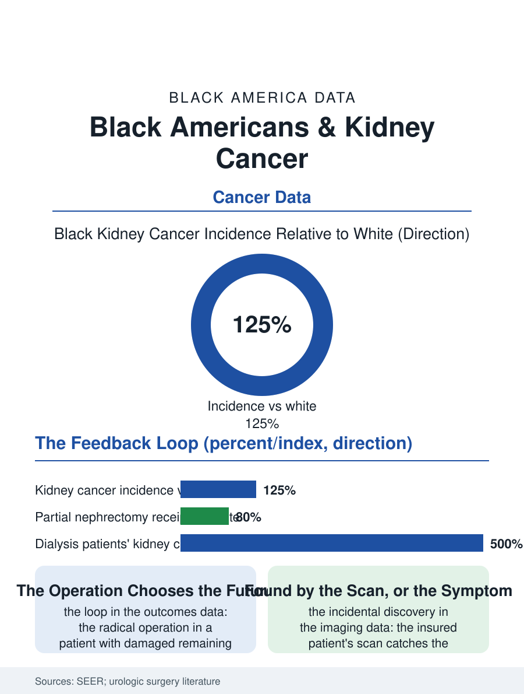

Black Public Health
The Loop: Black Americans and Kidney Cancer
The risk file restated in one organ, where the operation's preservation decides whether the patient returns to dialysis. The kidney cancer file.

Kidney cancer's incidence in Black Americans runs above the white rate, its mortality higher still, and its risk file, hypertension and obesity and the dialysis population's acquired cystic disease, is substantially the health section's own ledger restated in one organ. This article reads the kidney cancer file.
The Risk File Restated
The incidence data's gradient has the metabolic file's signature: the hypertension and obesity distributions, the smoking file's contribution, and the end-stage kidney disease population, whose acquired cystic kidneys develop the cancer at multiples of the general rate, compose the Black kidney cancer burden in proportions the registry analyses decompose, with the dialysis population's share being the file's distinctive entry, the treatment that sustains the kidney failure patient creating, over the years, the organ in which the cancer forms. The stage distribution follows the pattern of the bladder file's inverse: the incidental discovery, the tumor found on the imaging ordered for another reason, is the modern kidney cancer's common presentation, and the imaging access file therefore shapes the stage, the insured patient's scan catching the small tumor while the uninsured patient's presentation is the flank pain or the blood, the stage's later country. The surgical file's core is the partial nephrectomy, the kidney-sparing operation whose adoption the guidelines made the standard for the small tumor, and whose delivery by race in the hospital data follows the volume and referral pattern, the radical nephrectomy, the whole kidney's removal, being performed more often on the Black patient for the same tumor size in the registry analyses, the organ's preservation being itself an access variable. The hereditary file at the margin of the incidence deserves its note: the sickle cell trait's renal medullary carcinoma, a rare and aggressive cancer of the young trait carrier, is the kidney file's most racially specific entry, its diagnosis so tied to the trait population that the tumor's registry is effectively a Black registry, and its research support has followed the rare-disease file's usual arithmetic until the advocacy of the affected families began, in the current era, to move it.
The Nephrectomy's Preservation
The preservation gap's consequences are the kidney file's: the whole kidney's removal in the patient whose remaining kidney carries the hypertension and diabetes files' damage accelerates the road to the dialysis population from which the risk file began, a feedback loop the outcomes data trace, the radical operation's patient reaching the end-stage kidney disease at higher rates in the follow-up studies, so that the surgical choice is not only the cancer's treatment but the kidney's future, priced in the dialysis file's years. The systemic therapy file for the advanced disease, the targeted and immunotherapy regimens of the current decade, follows the trial and access pattern, and the nephrectomy's volume distribution, the high-volume center's better preservation rates, completes the delivery picture. The surveillance file after the operation, the imaging schedule whose adherence the follow-up data track, distributes on the access map in the file's usual form.
The Organ's Feedback Loop
The kidney cancer file closes on the loop it describes, because the organ's story in Black America is a circuit: the hypertension and the diabetes injure the kidney, the injured kidney's dialysis creates the cystic ground, the cystic ground grows the cancer, and the cancer's operation, if it takes the whole organ, returns the patient to the dialysis the loop began from, a circuit the preservation operation is designed to break and the access file's distribution decides whether it does. The file's prevention is the risk file's own, the blood pressure and weight and smoking controls whose effects the metabolic files count, and the imaging access that catches the tumor small enough to spare the organ it grows in. The registries count the cases each year, the Black incidence above the white and the mortality's multiple wider. The file's last entry is the scan's incidental finding, the small tumor on the imaging ordered for another reason, whose operation, partial or whole, decides not only the cancer's course but the kidney's remaining years, which is the loop's whole argument in a single image, and the reason the preservation rate is the file's true outcome measure. The loop breaks where the preservation is practiced.
More in Black Public Health
Hypertension Among Black Adults: Prevalence, Control, and Consequences
About 55 percent of Black adults have hypertension — the highest rate of any U.S. group. Prevalence, onset, control, and the stroke, heart, and kidney consequences in the data.
Diabetes Among Black Adults: Prevalence and Complications
Nearly one in five Black adults has diabetes, diagnosed or undiagnosed — and its complications fall with particular weight. The CDC data on prevalence, control, and outcomes.
Black Life Expectancy: The Gap at Birth and Its Causes
Black life expectancy at birth is about 73 years, roughly five years below the national figure — the summary measure of every health gap in this section. The CDC data.
Source: National Cancer Institute SEER program; urologic oncology partial vs radical nephrectomy outcomes literature.